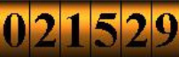

我是 Lemio，也可以叫我雷米歐
喜歡吃吃喝喝玩遊戲 ！
主要鑽研網頁前端框架vue3，使用vite、typescript、zod、tailwind進行開發，最近學著寫後端了。
後端是Express、typeORM
還有storybook、jest、husky之類的工具
我的座右銘是：日日行，不怕千萬里；常常做，不怕千萬事。
愛像一陣風 吹完它就走 這樣的節奏 誰都無可奈何
沒有妳以後 我靈魂失控 黑雲在降落 我被它拖著走
靜靜悄悄默默離開 陷入了危險邊緣 Baby 我的世界已狂風暴雨
喔 愛情來的太快 就像龍捲風...
剩下的還在施工中
已經有人來過